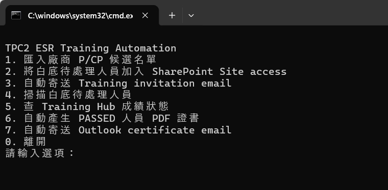

ESR P/CP Training 自動化流程 - 快速使用說明¶
目前 ESR P/CP Training 流程已完成約 95% 自動化，日常作業已可使用。後續如果發現少量 bug，會再逐步修正。
主入口資料夾：
OAIC Ltd\PROJECT_TWSHXESR - Documents\General\ESR AutoDoc Hub\04_ESR Training
請雙擊：
Run ESR Training Automation (中文).cmd
或使用英文版：
Run ESR Training Automation (English).cmd
打開後會看到的畫面¶
打開啟動檔後，應該會看到這個 CLI 選單。輸入 command 編號後，按 Enter 即可執行。

主要操作都從這個選單執行。Outlook templates 只有在下面流程說需要使用時，才需要另外打開。
首次使用：安裝 Python¶
如果自動化程式顯示找不到 Python，只需依照以下步驟安裝一次：
1. 開啟 Python 官方的 Windows 下載頁面。在 Stable Release 下方下載 Windows installer (64-bit)。請勿選擇 Pre-release、32-bit、ARM64 或 embeddable package。

2. 如果 HP Sure Click 顯示防護訊息，先確認檔案是從 python.org 下載，再點選 Remove protection and open。

3. 在 Python 安裝畫面： - 務必勾選 Add python.exe to PATH。 - Use admin privileges when installing py.exe 對目前 Windows 使用者安裝通常不是必要項目。除非 Windows 或 IT 要求系統管理員授權，否則可不勾選。

4. 點選 Install Now，等待 Python 安裝完成。
5. 開啟 Windows 搜尋並輸入 cmd。
6. 在 Command Prompt 下方點選 Open，不需要使用系統管理員模式。

7. 複製以下完整指令，貼到 Command Prompt，按下 Enter，並等待套件安裝完成：
python -m pip install --user openpyxl pypdf reportlab pillow playwright

這一行指令會一次安裝目前 AutoDoc 工具需要的所有 Python 套件。其他現有自動化不需要額外的 Python 套件：
| 自動化工具 | 需要的軟體 |
|---|---|
| ESR Training | Python 3 與上述套件 |
| 3DLA MoM | Windows PowerShell、Microsoft Word 與 Excel |
| 3DLA Overview | Windows PowerShell 與 Microsoft Excel |
| DPR | Windows PowerShell、Microsoft Word 與 Excel |
8. 關閉 Command Prompt，再次執行 Run ESR Training Automation (中文).cmd。
使用前準備¶
- 如需請廠商提供 Person / Competent Person 名單，使用
Person _ CP Candidate Request.oft範本寄信。 - 廠商回填後，把檔案放到：
04_ESR Training\01_Inbox\P_CP Candidate Lists
檔名建議保持：
TPC2_ESR_P_CP_Training_Register_[Company Name].xlsx
- 執行前請關閉相關 Excel / Outlook 視窗，避免檔案被鎖住。
重要資料位置¶
Email templates：
04_ESR Training\00_Template\Training email Templates
Training result Excel：
04_ESR Training\02_Processing
自動化產生的證書：
04_ESR Training\04_Certificates
正式 Register 不搬到 AutoDoc Hub，仍保留在：
OAIC Ltd\PROJECT_TWSHXESR - Documents\General\Safety Document - SFD Register\TWSHXHV_ESR_OverallRegister.xlsm
腳本會自動把候選人資料寫入這份 workbook 的 Old Training Register 工作頁。
流程對照表¶
先看下面這張圖，最快理解整個順序。

先看這張表，判斷什麼時候要用 Outlook template，什麼時候要回到 CLI 執行 command。
| 階段 | Email template | CLI command |
|---|---|---|
| 請廠商提供 P/CP 候選名單 | 1. Person _ CP Candidate Request.oft |
無 |
| 匯入廠商回填名單 | 無 | 1. 匯入廠商 P/CP 候選名單 |
| 確認既有有效紀錄 / possible matches | 2. ESR Training - Candidate Validity Confirmation.oft |
只有 Step 1 summary 需要廠商確認時才使用 |
| 加入 Training Hub Site access | 無 | 2. 將白底待處理人員加入 SharePoint Site access |
| 寄送 Training invitation | 3.1 Person Training invitation.oft / 3.2 CP Training invitation.oft |
3. 自動寄送 Training invitation email |
| 等學員完成 training | 無 | 不需 command，等待成績出現在 Training Hub result workbook |
| 檢查目前待處理人員 | 無 | 4. 掃描白底待處理人員 |
| 查詢 training result | 視需要使用 4. Person _ CP Re-training Required.oft |
5. 查 Training Hub 成績狀態 |
| 產生證書 | 無 | 6. 自動產生 PASSED 人員 PDF 證書 |
| 寄送證書 | 5.1 Person Training - Certificate.oft / 5.2 CP Training - Certificate.oft |
7. 自動寄送 Outlook certificate email |
建議操作順序¶
1. 請廠商填寫 P/CP 候選名單¶
使用 email template： 1. Person _ CP Candidate Request.oft
1.1 用這個範本寄給廠商，請他們填寫需要參加 Person / Competent Person training 的名單。
1.2 收到廠商回填檔後，放到：
04_ESR Training\01_Inbox\P_CP Candidate Lists
2. 匯入廠商回填名單¶
執行 CLI command： 1. 匯入廠商 P/CP 候選名單
請在黑色指令視窗選擇第 1 個 command：

2.1 此 command 會讀取 01_Inbox\P_CP Candidate Lists 內的廠商回填檔。
2.2 匯入前會先檢查正式 Old Training Register：
- ESR Training 既有紀錄從 training result date 起算，有效期為
730 天。 - 系統會優先用 email 比對。
- 如果沒有 email，才會用 full name 比對。
- 只有姓名相符時，會列為 possible match，不會默默跳過。
- 如果找到有效紀錄，該人員不會被匯入成白底待處理人員。
- 如果有效期剩餘少於
30 天，會標示為EXPIRING SOON。
2.3 Command 結束時會顯示 summary：
- 已找到的有效紀錄
- 新增或已過期並匯入的人員
- 需要人工確認的 possible matches
2.4 如果有人已經有有效的 ESR Training，黑色指令視窗會顯示這段：
COPY TO TEMPLATE 2 - Candidate Validity Confirmation
請複製這個標題下面的名單。這些人代表已經通過且仍在有效期內，目前不需要再考一次。

2.5 到 email templates 資料夾，打開第 2 個範本：
2. ESR Training - Candidate Validity Confirmation.oft

2.6 把剛才複製的名單，貼到 email 內文紅框的位置，再寄給廠商對應窗口，告訴他們這些人仍有效，不需要重新訓練。

2.7 Step 1 不會自動寄 email。它只會匯入需要訓練的人員，並準備清楚的 summary。
3. 將人員加入 SharePoint Site access¶
執行 CLI command： 2. 將白底待處理人員加入 SharePoint Site access
3.1 此 command 會開啟 Training Hub，將白底待處理人員加入 Site access。
3.2 執行期間請暫時不要操作滑鼠或鍵盤。去喝杯茶、上個廁所，讓它安靜跑完。
4. 寄送 Training invitation email¶
執行 CLI command： 3. 自動寄送 Training invitation email
4.1 此 command 會自動使用：
3.1 Person Training invitation.oft3.2 CP Training invitation.oft
4.2 Person / CP 收件人會自動放入 BCC，然後直接寄出。
4.3 執行前請先確認白底待處理名單正確，因為此步驟會真的寄出 email。
5. 檢查目前仍待處理的人員¶
執行 CLI command： 4. 掃描白底待處理人員
5.1 這個 command 會顯示目前仍留在白底待處理名單的人員。
5.2 可在寄出 invitation 後、等待學員完成 training 的期間使用。
6. 查 Training Hub 成績狀態¶
執行 CLI command： 5. 查 Training Hub 成績狀態
6.1 此 command 會搜尋 02_Processing 內的 Training Hub 成績檔。
6.2 通過標準：
- Person：
>= 36分 - CP：Module 1 與 Module 2 都需
>= 20分
6.3 對 Training Hub result workbook 來說，系統只會採用最近約 6 個月內的結果作為這次 training attempt，避免把去年同名紀錄誤判為這次通過。
6.4 這和 Step 1 的既有證書有效期判斷不同。Step 1 是檢查正式 Register 內既有紀錄是否仍在 730 天 有效期內。
6.5 如果需要通知對方重新 training，使用：
4. Person _ CP Re-training Required.oft
7. 產生 PDF 證書¶
執行 CLI command： 6. 自動產生 PASSED 人員 PDF 證書
7.1 此 command 只會對有效 PASSED 的人員產生不可編輯的圖片式 PDF 證書。
7.2 證書會存放在：
04_Certificates\Person
04_Certificates\Competent Person
8. 寄送 certificate email¶
執行 CLI command： 7. 自動寄送 Outlook certificate email
8.1 此 command 會自動使用：
5.1 Person Training - Certificate.oft5.2 CP Training - Certificate.oft
8.2 系統會自動填入收件人 email、附上剛產生的 PDF 證書，並直接寄給已通過測驗的人員。
已自動化的部分¶
- 不需要手動 key-in 人員資料。
- 不需要手動加入 SharePoint Site access。
- 不需要手動寄 Training invitation email。
- 不需要手動檢查是否通過，結果與通過日期會顯示在畫面上。
- 不需要手動製作 ESR 證書。
- 不需要手動附上證書寄出 certificate email。
小提醒¶
- 執行前請先關閉相關 Excel / Outlook 草稿視窗。
- 自動操作 SharePoint 或 Outlook 時，請暫時不要使用滑鼠與鍵盤。
- 如果人員以前曾經通過，但超過 6 個月，系統不會把舊成績當作這次通過。
- 如果 Outlook 或 SharePoint 畫面卡住，先關閉相關視窗，再重新執行該步驟。
- 此工具已接近完整自動化，但仍可能因 Outlook / SharePoint 介面更新而出現小 bug，發現後再修。